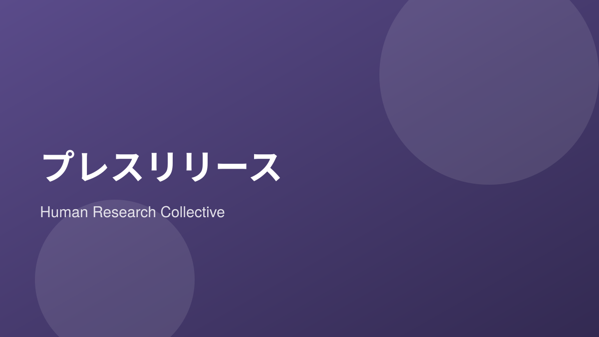

このたび私たちは、分野を横断する研究者・実践者によるリサーチコレクティブ Human Research Collective を設立しました。
設立の趣旨
テクノロジーが社会を急速に変えていく中で、「人間にとって何が望ましいのか」という問いの重要性はますます高まっています。私たちは、この問いを研究の中心に据え、調査・論考・解説を継続的に発信していきます。
今後の活動
- 人々の意識や行動に関する定量・定性調査の実施
- 学際的な視点からの論考の発信
- 専門的なテーマをひらく解説コンテンツの提供
本ブログを通じて、研究の成果と過程を順次公開してまいります。今後の活動にご期待ください。